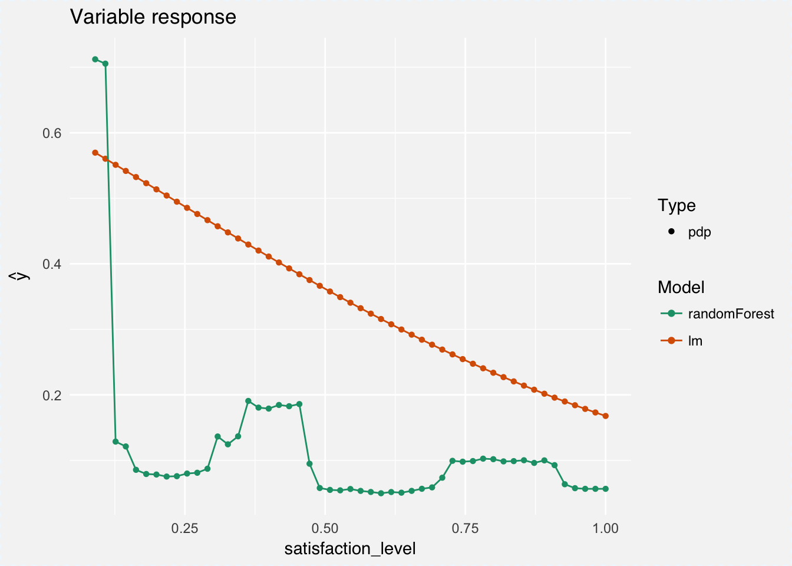
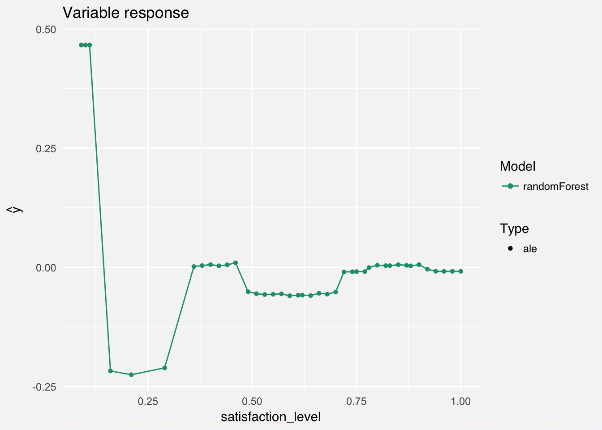
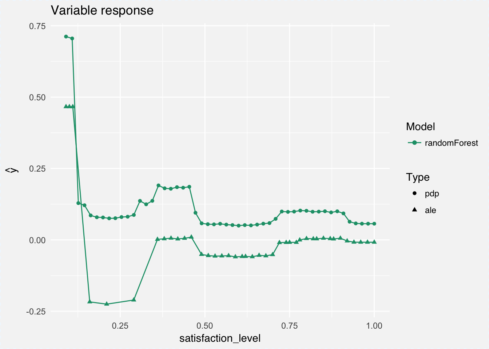
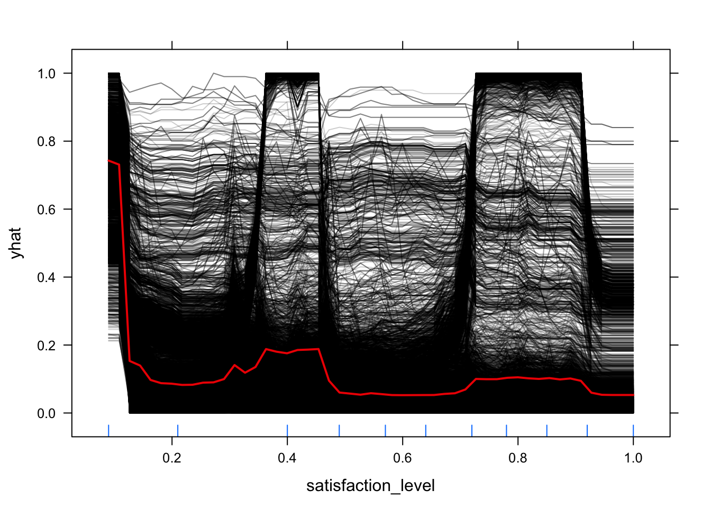

2.3 Variable response

Cheatsheet
The dimension of input \(x\) for black box models is usually high (large \(p\)). But in many cases small number of variables play important role in the model OR there are some reasons to believe that variables work in an additive fashion/low-level interactions in the model.
In such cases one may be interesting in verification how the conditional response for a selected interesting variable/variables looks like.
Methods presented below help to understand the conditional structure of a model.
2.3.1 Partial Dependence Plot
Partial Dependence Plots (see pdp package [@pdp]) for a black box \(f(x; \theta)\) calculates the expected output given a selected variable.
\[ p_i(x_i) = E_{x_{-i}}[ f(x^i, x^{-i}; \theta) ] \]
Of course this expectation cannot be calculated directly as we do not know fully the \(f()\) neither the distribution of \(x_{-i}\). This value is estimated by
\[ \hat p_i(x_i) = \frac{1}{n} \sum_{j=1}^{n} f(x^i_j, x_j^{-i}, \hat \theta) \]
Let’s see an example for the model HR_rf_model. Below we are using DALEX::single_variable function that is calling pdp::partial function to calculate pdp curve for variable satisfaction_level. Then the curve is plotted with generic plot.single_variable_explainer() function.
Marginal response plots are created in four steps.
- We need to fit model. For example a Random Forest model.
library("randomForest")
library("breakDown")
HR_rf_model <- randomForest(left~., data = breakDown::HR_data, ntree = 100)
# a79f3c7ec27499fb91e46ee70d423ac8
# archivist::aread("pbiecek/DALEX/arepo/a79f3c7ec27")- We need to create an explainer. It’s an interface that can be used to explain a black-box model.
- Now we can calculate the marginal response with the PDP method.
- And we are ready to plot it.

2.3.2 Model Comparisons
Marginal response plots are very useful in comparisons of different models. Let’s fit Generalized Linear Model, Random Forest Model and XGBoost Model to the same data.
Then we can use PDP plots to compare these models. Random Forest Model was fitted in the previous chapter. Here we are training remaining models.
HR_glm_model <- glm(left~., data = breakDown::HR_data, family = "binomial")
library("xgboost")
model_martix_train <- model.matrix(left~.-1, breakDown::HR_data)
data_train <- xgb.DMatrix(model_martix_train, label = breakDown::HR_data$left)
param <- list(max_depth = 2, eta = 1, silent = 1, nthread = 2,
objective = "binary:logistic", eval_metric = "auc")
HR_xgb_model <- xgb.train(param, data_train, nrounds = 50)Models are trained. Now we can create explainers and single variable explanations
logit <- function(x) exp(x)/(1+exp(x))
explainer_glm <- explain(HR_glm_model, data = HR_data)
expl_glm <- single_variable(explainer_glm, "satisfaction_level", "pdp", trans=logit)In order to compare these models it’s enough to plot all of them into a single chart.

2.3.3 Accumulated Local Effects Plot
As it is presented in the chapter @(pdpchapter), the Partial Dependence Plot presents the expected model response with respect to marginal distribution of \(x_{-i}\). In some cases, e.g. when repressors are highly correlated, expectation over the marginal distribution may lead to biases/poorly extrapolated model responses. Especially in area far from the training set (see [@ALEPlot] for more details).
Accumulated local effects (ALE) plots (see ALEPlot package [@ALEPlot]) solves this problem by using conditional distribution \(x_{-i}|x_i = x_i^*\). This leads to more stable and reliable estimates (at least when the predictors are highly correlated).
Let see an example for ALE plots. We can used the model and explainer created in steps 1-2 in the PDP chapter above.
Estimation of main effects for satisfaction_level is similar to the PDP curves. Here we are using DALEX::single_variable function that is calling ALEPlot::ALEPlot function to calculate ALE curve for variable satisfaction_level.
exel_rf <- single_variable(explainer_rf, variable = "satisfaction_level", type = "ale")
plot(exel_rf)
It may be useful to compare ALEPlots and PDP plots. Again, it’s simple with the generic DALEX function.

2.3.4 Individual Conditional Expectation Plot
Individual Conditional Expectations (ICE) may be considered as an extension of the PDP curves (see ICEbox package [@ICEbox]). Instead of plotting expected value over all observations, for ICE we are plotting individual conditional model responses. Average of ICE curves results in PDP curve.
An ICE curve for observation \(k\) over variable \(i\) may be defined as
\[ ice_k(x_i) = f(x^i, x_k^{-i}; \theta) \]
ICE curves can be plotted with pdp package. Note that curves may be cantered in a given point, this helps in identification of possible interactions.
library("pdp")
library("randomForest")
library("breakDown")
library("ggplot2")
HR_rf_model <- randomForest(left~., data = breakDown::HR_data, ntree = 100)
part_rf_satisfaction <- partial(HR_rf_model, "satisfaction_level")
part_rf_satisfaction <- partial(HR_rf_model, pred.var = "satisfaction_level", ice = TRUE)
plotPartial(part_rf_satisfaction, rug = TRUE, train = HR_data, alpha = 0.2)

Or with the ICEbox package.
library("ICEbox")
part_rf_satisfaction = ice(object = HR_rf_model, X = HR_data, y = HR_data$satisfaction_level,
predictor = "satisfaction_level", frac_to_build = .1)## ............................................................................................
As ICE curves are useful tool for identification of interactions, these individual curves may be clustered with the clusterICE function.

2.3.5 Mering Path Plot
The package ICEbox is not working for factor variables while the pdp package returns plots that are hard to interpret.
An interesting tool that helps to understand what is happening with factor variables is the factorMerger package (see [@factorMerger]).
Here we have Merging Path Plot for a factor variable sales.
library("factorMerger")
path <- mergeFactors(HR_data$left, HR_data$sales, method = "fast-adaptive",
family = "binomial", abbreviate = FALSE)
plot(path, panel = "response") + theme_mi2()
Note that you can use the factorMerger package to understand predictions calculated with a black-box model. The random forest model HR_rf_model returns continuous response. But the factorMerger works for such variables as well.
In the top right panel one may see the distribution of predictions for the selected group.
HR_data$left_predicted <- predict(HR_rf_model)
path <- mergeFactors(HR_data$left_predicted, HR_data$sales, method = "fast-adaptive",
abbreviate = FALSE)
plot(path, panel = "response", responsePanel = "boxplot", nodesSpacing = "effects") + theme_mi2()